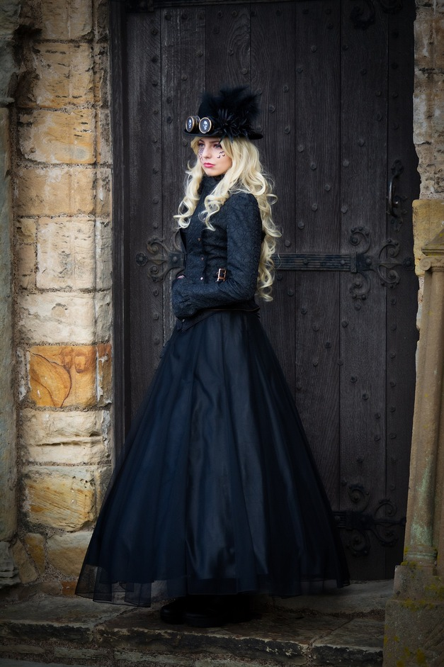

Anunțuri
Magazinul fizic intră în renovare până în Mai. Toate comenzile cu ridicare în magazin vor primi livrare gratuită!
Noutăți
Shop the look!
Categorii de haine
Trupe disponibile
Mărci populare
Program de lucru
| Zi | Deschidere | Închidere | Observații |
|---|---|---|---|
| Luni - Vineri | 10:00 | 20:00 | Program normal |
| Sâmbătă | 12:00 | 18:00 | |
| Duminică | Închis | Zi liberă | |
| * Program special în zilele de sărbătoare | |||
Q&A
-
Comenzi
În cât timp ajunge comanda mea?
Timpul de livrare variază în funcție de locația ta și de metoda de expediere selectată. În general, livrarea durează între 2 și 5 zile lucrătoare. Vei primi un cod de tracking pentru a urmări comanda. După ce aceasta a fost predată firmei de curierat, poți accesa site-ul dedicat al acesteia pentru mai multe detalii.
Pot ridica personal comanda dintr-un magazin fizic?
Da, oferim și opțiunea de pick-up din magazinul nostru fizic. Vei fi notificat prin email când comanda ta este gata de ridicare.
-
Produse
Cum aleg mărimea potrivită?
Fiecare produs are un ghid de mărimi disponibil pe pagina sa. Îți recomandăm să verifici tabelul și să măsori înainte de a plasa comanda.
Totuși, dacă vrei să îți calculezi mărimea singur, iți punem la dispoziție formula pentru mărimile din EU!
Ce fac dacă produsul pe care îl vreau nu mai este în stoc?
Dacă un produs nu mai este disponibil, te poți abona la notificări, iar noi te vom anunța prin email când revine pe stoc.
-
Colaborare
Vreau să mă alătur echipei! Cum fac asta?
În prezent, recrutăm doar modele pentru promovarea produselor noastre. Dacă ești pasionat(ă) de stilul goth, rock, metal sau alternativ și vrei să reprezinți brandul nostru, te invităm să aplici!
Cum aplici?
- Descarcă fișierul de aplicare de aici.
- Completează toate informațiile solicitate.
- Trimite fișierul completat împreună cu câteva fotografii reprezentative la emailul nostru.
Îți punem la dispoziție și regulamentul/contractul pentru această colaborare!
Despre noi
Moda alternativă nu înseamnă doar haine. Este o declarație, o atitudine, un stil de viață. De aceea, am creat acest magazin pentru toți cei care trăiesc prin muzică, artă și expresie liberă.
Dacă iubești rock, goth, metal sau influențe punk, emo, grunge și steampunk, aici nu vei găsi doar haine - vei găsi o comunitate.
De unde a început totul?
Totul a pornit din pasiunea noastră pentru muzică și cultura alternativă. Am vrut să oferim un loc unde fiecare să găsească:
- Tricoul perfect cu trupa preferată
- O rochie gotică care atrage privirile
- O pereche de bocanci care îți dau încredere
De-a lungul timpului, am adus cele mai bune merchandise-uri oficiale și branduri care definesc acest stil.
Rock and roll is about attitude, belief in yourself, and a desire to express who you are.
- Ozzy Osbourne
Bine ai venit în lumea noastră. Bine ai venit ACASĂ!